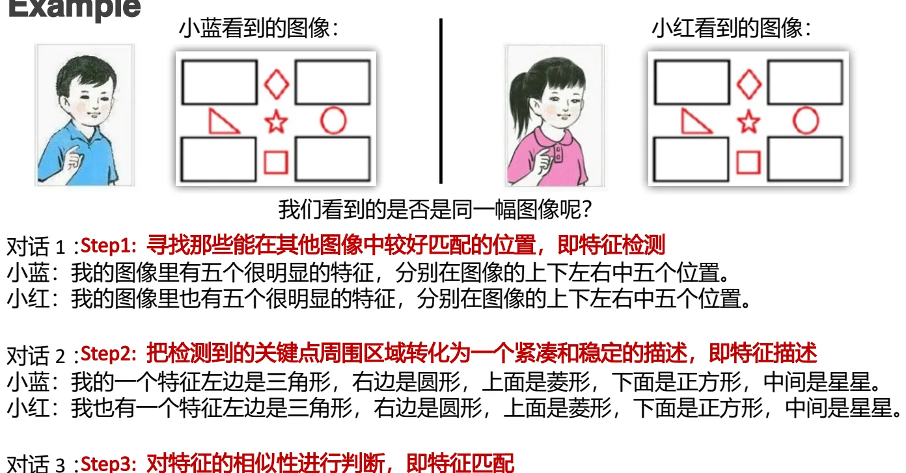
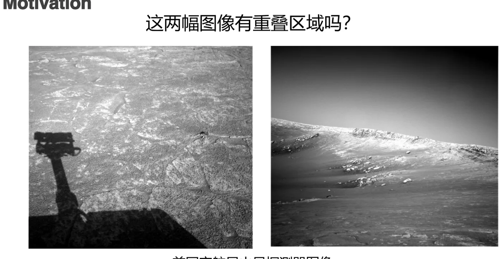
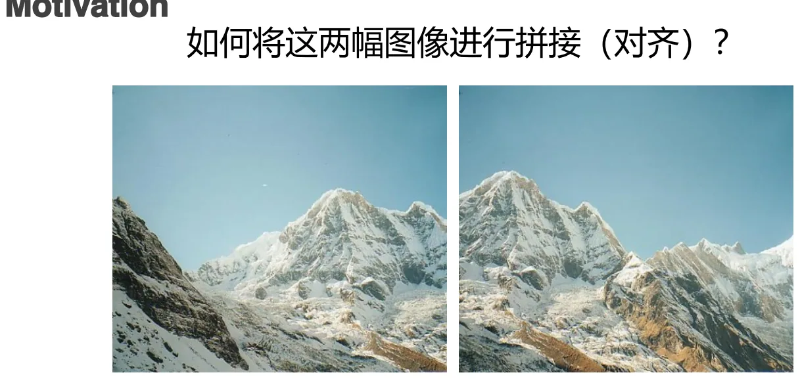
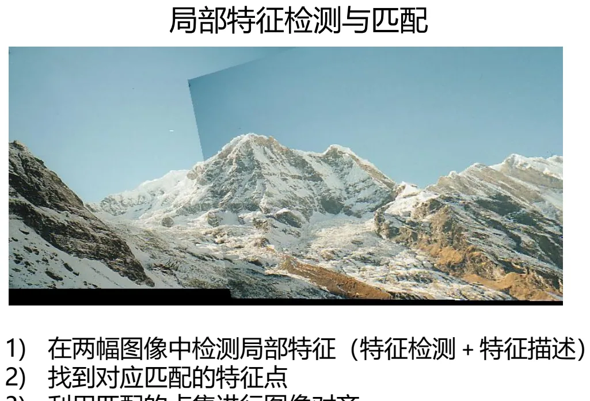
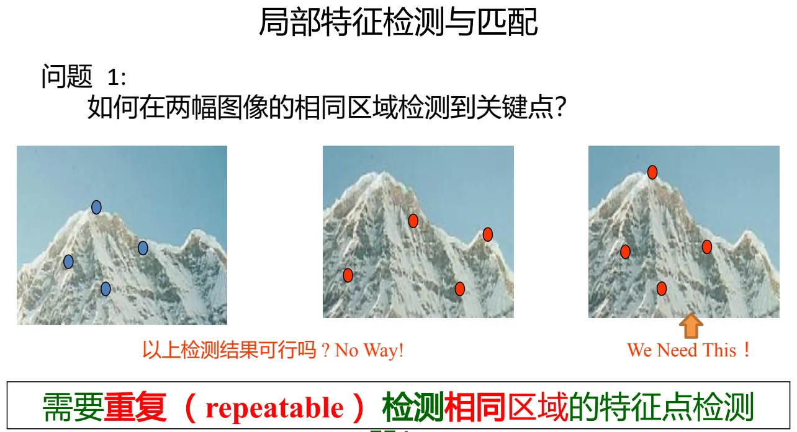
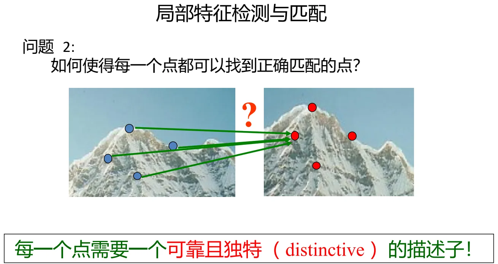
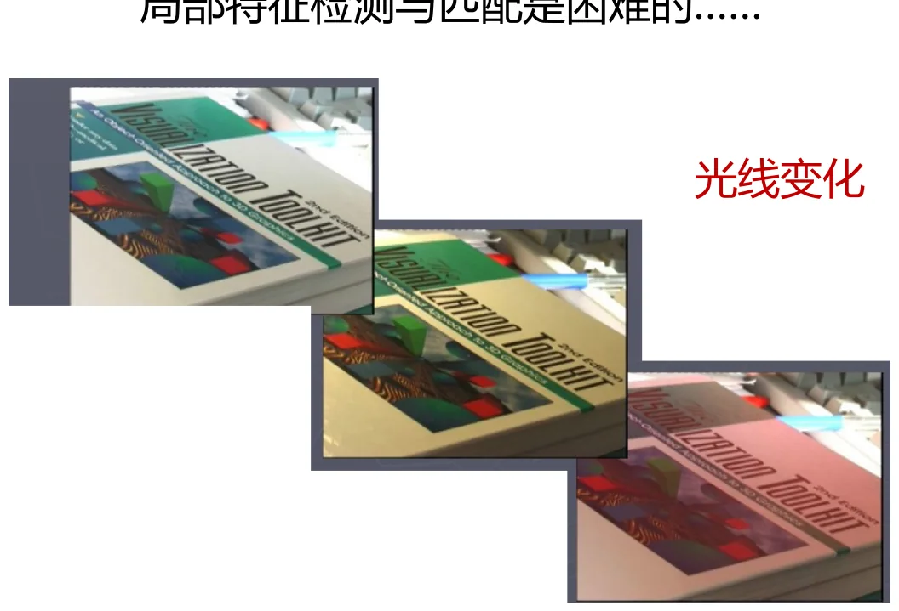
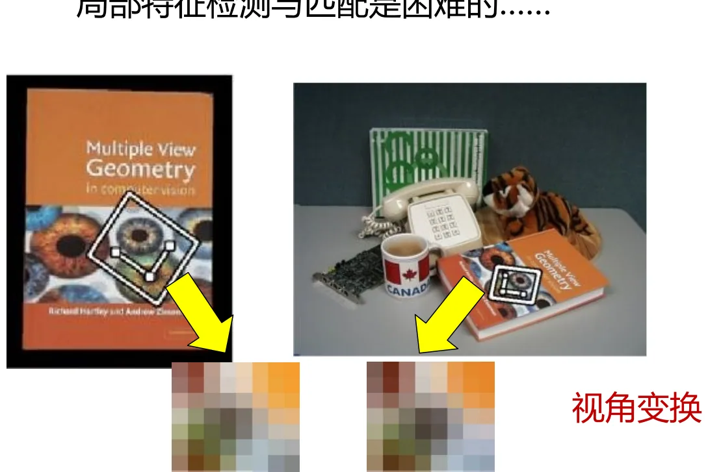
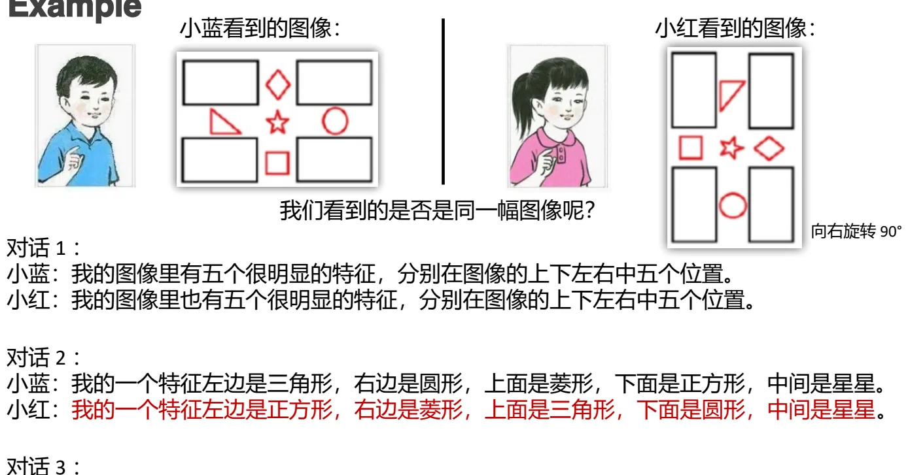
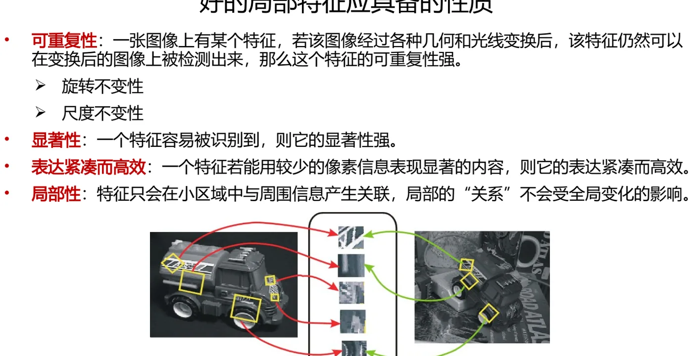

计算机视觉 · 第 4 章 特征检测与匹配
4.1 为什么需要局部特征
这一节要回答一个「为什么」：既然第 3 章已经能从图像里找出边缘和线条，为什么还要另起一套「局部特征」？课件用三组动机把问题讲清楚——同一场景的视角与光线会剧烈变化、全景拼接需要找对齐点、火星探测器拍回的两幅图像要先判断有没有重叠区域——这些任务都要求先在两幅图里找到同一些位置，再去比较它们。由此引出局部特征检测与匹配的三步走，以及两个必须先回答的问题：怎么保证检测可重复，怎么保证描述够独特。
1. 三步走：特征检测、特征描述与特征匹配
课件先讲了一个「小蓝与小红」的故事。两人手里各有一幅图像，小蓝说：我的图像里有五个很明显的特征，分别在图像的上下左右中五个位置；小红说：我的图像里也有五个特征，位置也一样。于是两人对上了第一层——特征的位置是可重复检测的。
但位置对上还不够。小蓝接着说：我的一个特征，左边是三角形、右边是圆形、上面是菱形、下面是正方形、中间是星星；小红也给出了完全相同的描述。到这一步，两人才敢说「我们看到的是同一幅图像」。这段对话恰好对应了局部特征检测与匹配的三个步骤：
- Step 1 特征检测：寻找那些能在其他图像中较好匹配的位置（关键点）；
- Step 2 特征描述：把检测到的关键点周围区域转化为一个紧凑、稳定的描述；
- Step 3 特征匹配：对特征的相似性进行判断，也就是计算匹配。

注意这三步的分工：检测决定「在哪儿看」，描述决定「看到的是什么」，匹配决定「这两个是不是同一个」。后面几节正是沿着这条线走的——4.2 节讲检测（Harris），4.3 节解决检测的尺度问题（LoG、DoG），4.4 节讲描述（SIFT），4.5 节讲匹配与评价。
2. 动机：为什么需要局部特征
课件给出的第一个动机是一组「同一场景、不同人拍」的照片——同一处风景，视角和光线都发生了剧烈变化。人一眼就能看出这是同一个地方，因为人抓住的是画面里那些稳定、独特的局部结构（建筑轮廓、窗格、雕塑），而不是逐像素去比对整幅图。
第二个动机来自工程现场：美国宇航局火星探测器拍回的两幅图像，有没有重叠区域？这个问题不能靠人眼回答——探测器要在星上或在地面自动判断，才能决定下一步怎么走、往哪儿走。

第三个动机是图像拼接（对齐）。把两张有重叠的照片拼成一张全景图，第一步不是 blending，而是找到它们在重叠区里对应同一物理点的位置，然后估计出一个变换把两幅图对齐。

三个动机指向同一套流程，课件把它总结为「局部特征检测与匹配」：
- 在两幅图像中检测局部特征（特征检测 + 特征描述）；
- 找到对应匹配的特征点；
- 利用匹配的点集进行图像对齐。

这里要提醒一句：「检测」和「描述」是两个独立的环节，但常常配套设计。检测负责选出位置，描述负责把位置变成可比较的向量；如果描述子不稳定，再好的检测子也匹配不上——这正是下一节两个问题中的第二个。
3. 两个必须先回答的问题
把流程拆开之后，问题就变成两个。
问题 1：如何在两幅图像的相同区域检测到关键点？
课件用一组对比图说明了什么叫「不行」与什么叫「需要」：同一片区域，如果检测结果随视角、光照改变而漂移，那这些点就无法在两幅图之间对上。所以需要的是可重复（repeatable）的特征点检测器——同一物理位置，在各种变换之后仍然能被检测到，并且检测出来的就是它。

问题 2：如何使每一个点都能找到正确匹配的点？
即使两边都检测到了正确的点，还要能把它们一一对上。如果两个不同的关键点在描述上长得一样，匹配就会出错。所以每一个点都需要一个可靠且独特（distinctive）的描述子。

这两个问题分别对应「检测子」和「描述子」，也解释了为什么这门课在 4.2–4.4 节要连着讲三种算子：Harris 解决「哪些位置适合做关键点」，LoG/DoG 解决「在哪个尺度上做关键点」，SIFT 解决「怎么描述才能既稳定又独特」。
4. 为什么困难：变换、退化与异常
课件用一页专门讲光线变化：同一个物体，曝光和明暗一变，像素值整体就变了，基于灰度比较的方法很容易失效。

另一页讲视角变换：相机绕着物体转，同一个平面在图像里被压成了不同的形状——这正是第 2 章里讲过的透视变换在起作用。

最能说明问题的是「小蓝与小红」对话的反面版本：这一回，小红把一个特征四周的排布整个转了个方向——小蓝说「左边是三角形，右边是圆形，上面是菱形，下面是正方形」，小红说「左边是正方形，右边是菱形，上面是三角形，下面是圆形」。位置仍然对得上，描述却对不上了。

这张图给了一个很实用的结论：「检测到同一个点」和「认出它是同一个点」是两回事。前者要求检测子可重复，后者要求描述子对旋转、尺度、光照等变换保持不变。课件还补了一句——除了几何与光照，还有噪声、遮挡、人为压缩等等问题。
5. 好的局部特征应具备的性质
把上面的困难倒过来看，就得到好特征的五条标准：
- 可重复性（最重要）：一张图像上有某个特征，若该图像经过各种几何和光线变换后，该特征仍然可以在变换后的图像上被检测出来，那么这个特征的可重复性强。其中两个关键的不变性是旋转不变性与尺度不变性；
- 显著性：一个特征容易被识别到，则它的显著性强；
- 表达紧凑而高效：一个特征若能用较少的像素信息表现显著的内容，则它的表达紧凑而高效；
- 局部性：特征只会在小区域中与周围信息产生关联，局部的「关系」不会受全局变化的影响。

这四条里，可重复性被排在最前面，因为它是后面一切的前提：点都找不准，描述得再漂亮也没用。局部性则解释了「局部特征」这个名字——正因为只看局部，遮挡掉一半图像时，剩下那一半里的特征依然可用；而边缘检测、模板匹配这类依赖全局或大范围结构的方法，一遮挡就整体失效。
本节小结
- 局部特征检测与匹配分三步：特征检测（找位置）、特征描述（把关键点周围区域变成紧凑稳定的描述）、特征匹配（判断相似性）。
- 三个动机贯穿全章：同一场景的视角与光线剧烈变化、火星探测器图像判断有无重叠区域、图像拼接（对齐）——都要先在两幅图里找到对应同一物理点的位置。
- 两个核心问题：检测必须可重复（repeatable），描述必须可靠且独特（distinctive）。
- 困难来自变换与退化：光线变化、视角变换、图像旋转（位置对得上而描述对不上）、噪声、遮挡、人为压缩。
- 好的局部特征应具备：可重复性（含旋转不变性、尺度不变性）、显著性、表达紧凑而高效、局部性。其中可重复性是前提，局部性保证了遮挡下的鲁棒性。